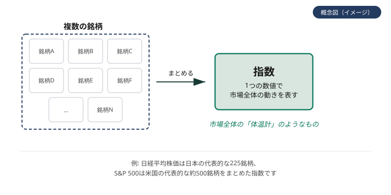
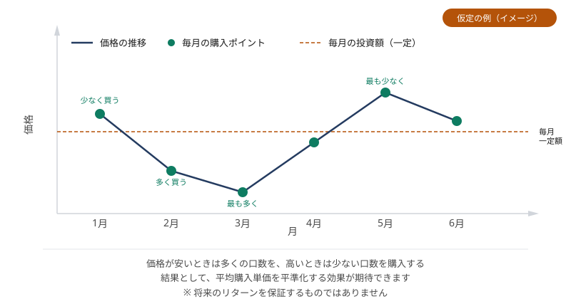

指数と投資信託
このページで学ぶこと
- 指数とは何か
- インデックスファンドの仕組み
- アクティブファンドとインデックスファンドの違い
- ベンチマークとトラッキングエラー
- 配当の基本
- 積立投資とドルコスト平均法
指数とは
指数（インデックス）とは、市場全体の値動きを示す指標です。特定の市場や分野の株価を平均化し、数値化したもので、市場全体の動向を把握するための目安となります。
代表的な指数には以下のようなものがあります。
- 日経平均株価: 日本の代表的な225社の株価を平均した指数
- TOPIX: 東京証券取引所の全上場銘柄を対象とした指数
- S&P 500: 米国の代表的な500社の株価を対象とした指数
- MSCI ACWI: 全世界の株式市場の値動きを示す指数
指数は「市場全体の体温計」
指数は、市場全体が上がっているのか下がっているのかを示す指標です。個別の株価ではなく、市場全体の動向を把握するために使われます。
図：指数（インデックス）とは

複数の銘柄をまとめて市場全体の動きを1つの数値で表したものが指数です（概念図です）
インデックスファンドの仕組み
インデックスファンドとは、特定の指数（ベンチマーク）の値動きに連動することを目指して運用される投資信託です。指数と同じ銘柄を同じ比率で保有することで、指数とほぼ同じ値動きを実現します。
インデックスファンドの特徴は以下のとおりです。
- 分散投資が手軽にできる: 1つのファンドで数百〜数千の銘柄に分散投資できる
- コストが低い: 指数に連動させるだけなので、運用コストが比較的低い
- 市場平均のリターン: 指数と同じ値動きを目指すため、市場平均並みのリターンが期待できる
アクティブファンドとの比較
アクティブファンドとは、指数を上回るリターンを目指して、ファンドマネージャーが積極的に銘柄を選んで運用する投資信託です。
| インデックスファンド | アクティブファンド | |
|---|---|---|
| 目標 | 指数と同じ値動きを目指す | 指数を上回るリターンを目指す |
| 運用方法 | 指数と同じ銘柄・比率で保有 | ファンドマネージャーが銘柄を選択 |
| コスト | 比較的低い | 比較的高い |
| リターン | 市場平均並み | 市場平均を上回る可能性も下回る可能性もある |
アクティブファンドが指数を上回るリターンを出すことは可能ですが、長期間にわたって指数を上回り続けることは難しいとされています。また、コストが高い分、リターンが目減りする点にも注意が必要です。
ベンチマークとトラッキングエラー
ベンチマークとは、ファンドの運用成果を評価するための基準となる指数のことです。インデックスファンドでは、ベンチマークと同じ値動きを目指して運用されます。
トラッキングエラーとは、ファンドの値動きとベンチマークの値動きの差のことです。インデックスファンドでは、トラッキングエラーが小さいほど、ベンチマークに忠実に連動しているといえます。
トラッキングエラーが生じる理由
- 運用コスト（信託報酬）がかかるため
- 指数の構成銘柄の変更に追従するタイムラグがあるため
- 現金保有や売買のタイミングによる影響があるため
配当の基本
配当とは、企業が利益の一部を株主に分配することです。投資信託では、保有する株式からの配当がファンドに蓄積され、分配金として投資家に支払われる場合があります。
分配金には以下の2つの種類があります。
- 普通分配金: ファンドの運用益から支払われる分配金
- 特別分配金（元本払戻金）: 投資家の元本の一部を取り崩して支払われる分配金
分配金が多いほど良いわけではない
分配金は、ファンドの純資産から支払われます。分配金を受け取ると、その分だけ基準価額が下がります。特別分配金（元本払戻金）は、元本の一部を返してもらっているにすぎません。分配金の多さだけでファンドを評価しないよう注意しましょう。
積立投資とドルコスト平均法
積立投資とは、毎月一定額を継続的に投資する方法です。積立投資では、ドルコスト平均法という考え方が使われます。
ドルコスト平均法とは、毎回一定額を投資することで、価格が安いときには多く買い、価格が高いときには少なく買う方法です。結果として、平均購入単価を平準化する効果が期待できます。
ドルコスト平均法の計算例（仮定・試算）
毎月10,000円ずつ、3か月にわたって投資信託を購入する場合を考えます（仮定の例です）。
| 月 | 基準価額 | 購入金額 | 購入量 |
|---|---|---|---|
| 1か月目 | 1,000円 | 10,000円 | 10口 |
| 2か月目 | 500円 | 10,000円 | 20口 |
| 3か月目 | 1,250円 | 10,000円 | 8口 |
| 合計 | — | 30,000円 | 38口 |
平均購入単価は、30,000円 ÷ 38口 ＝ 約789円となります。価格が下がった2か月目に多く買い、価格が上がった3か月目に少なく買ったことで、平均購入単価が平準化されました。
ただし、ドルコスト平均法は「必ず利益が出る」方法ではありません。価格が下がり続ければ、含み損を抱えることもあります。あくまで、購入タイミングを分散し、平均購入単価を平準化する手法のひとつです。
図：ドルコスト平均法のイメージ

毎月一定額を投資すると、価格が安いときに多く・高いときに少なく買える効果があります（仮定の例です）
よくある誤解
インデックスファンドは市場平均並みのリターンを目指しますが、市場が下がればファンドの価値も下がります。元本保証はありません。
ドルコスト平均法は平均購入単価を平準化する手法ですが、価格が下がり続ければ含み損を抱えることもあります。必ず利益が出る方法ではありません。
分配金はファンドの純資産から支払われるため、分配金を受け取ると基準価額が下がります。分配金の多さだけでファンドを評価しないよう注意しましょう。
理解度チェック
Q1. 指数とは何ですか?
Q2. トラッキングエラーとは何ですか?
Q3. ドルコスト平均法の特徴として正しいものはどれですか?